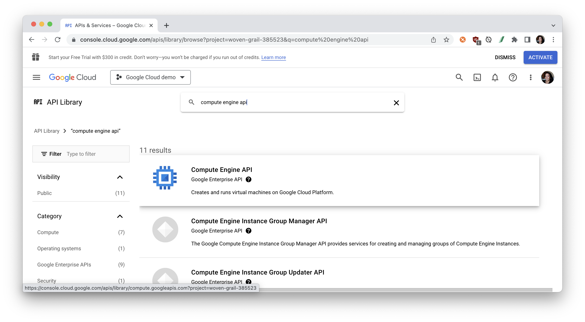
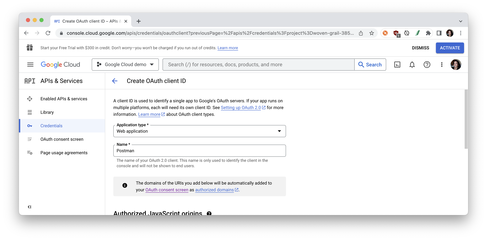
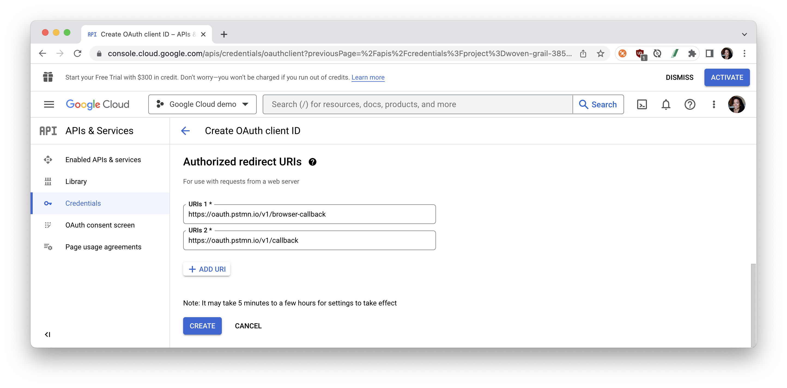
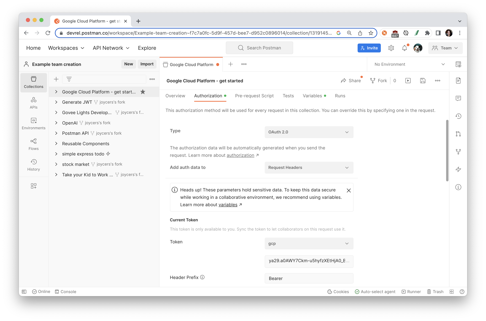
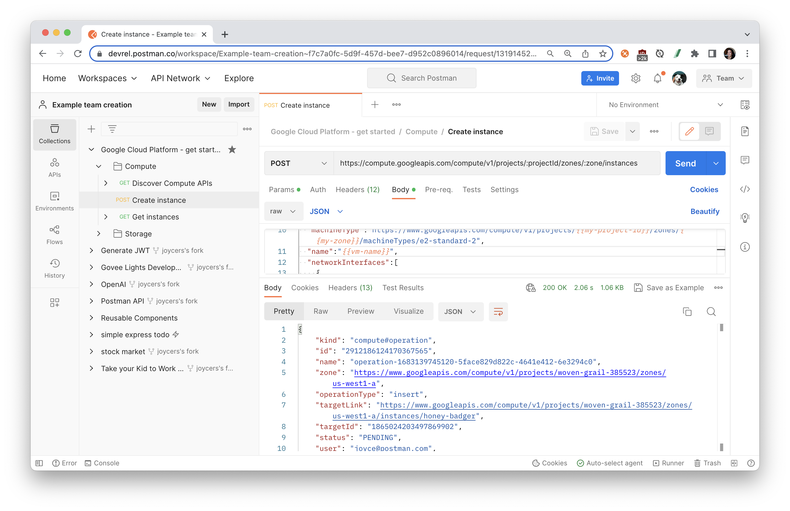
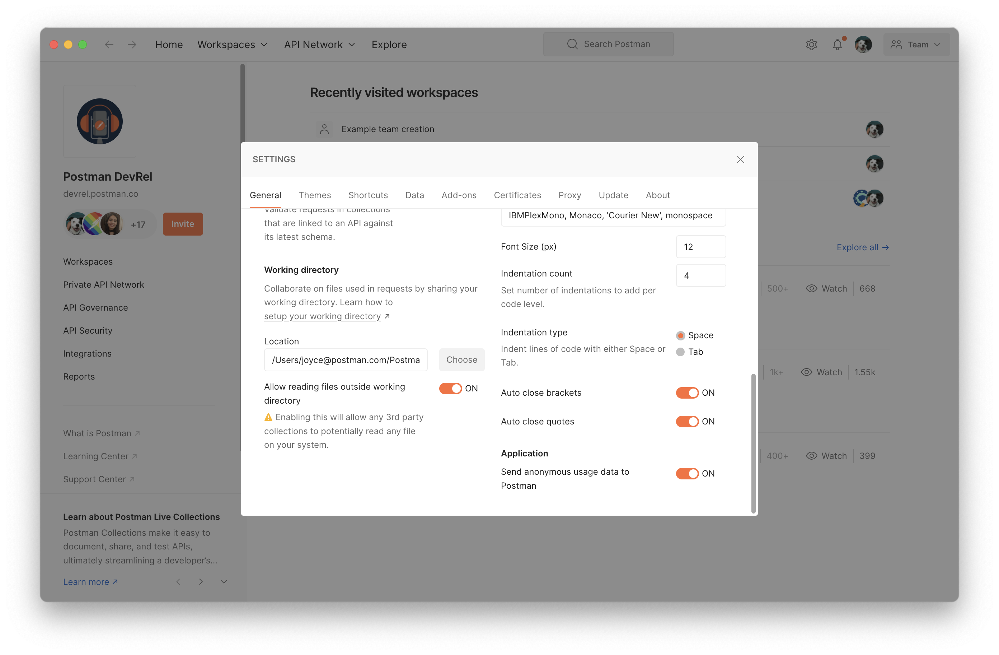

Learn how to get started with Google Cloud APIs in Postman. If you are using Google Cloud APIs for the first time, you can follow the steps in this guide to call the APIs using requests sent through the Postman client. You can also use these requests to experiment with an API before you develop your application.
Prerequisites
- Basic familiarity with APIs
What You'll Learn
- how to enable Google Cloud APIs
- how to authenticate to Google Cloud APIs
- how to set up Cloud instances and storage
- how to troubleshoot unexpected API behavior
- how to grant access to Cloud resources
- how to automate API workflows for Google Cloud Platform in Postman
What You'll Need
What You'll Build
- A Postman Collection with authorized API requests.
- Code samples to integrate into your own workflows and applications.
- API workflows to automate the setup of your infrastructure
Creating a Google account
To use Google Cloud APIs in your applications, you first need to have a Google account. This allows you to use Google developer products, including Google Cloud console, gcloud CLI, Cloud Logging, and Cloud Monitoring. If you're new to Google Cloud, create an account to evaluate how Google products perform in real-world scenarios. New customers also get $300 in free credits to run, test, and deploy workloads.
Creating a Google project
To use Cloud APIs, you also need to have a Google project. A project is equivalent to a developer account. It serves as a resource container for your Google Cloud resources. It also provides an isolation boundary for your usage of Google Cloud services, so you can manage quota limits and billing independently at the project level. Usage telemetry and dashboards are grouped by projects as well. If you don't already have a project, you can create one using the Google Cloud console.
To create a Google Cloud project:
- In the Google Cloud console, go to Menu > IAM & Admin > Create a Project.

- Give your project a name, select an organization, and a location.

Save project ID as variable in Postman
Let's save our Google project ID as a Postman variable, so that we can use it in our API requests.
- Click the orange Run in Postman button below to fork this example collection to your own Postman workspace.

- Enter a label for your fork and select the workspace to fork the collection:
- Select the Postman collection that you forked to your workspace. Find the Variables tab, and paste your project ID as the
my-project-idvariable value.
Discovering APIs
Before using any Cloud APIs, you should use Google Cloud console API Library to browse available Cloud APIs and discover the ones that best meet your business needs.
Enabling APIs
Some Cloud APIs are enabled by default. To use a Cloud API that is not enabled by default, you must enable it for your project. Depending on which services and which projects are involved from your application, including the client project and resource projects, you may need to enable an API for multiple projects. When you enable an API that depends on other APIs, those APIs are also enabled at the same time.
Let's enable the Compute Engine API to create and run virtual machines on Google Cloud Platform.
- From the Google Cloud console API library, find and select "Compute Engine API". 
- Use the Enable button to enable the API.

You will need to enable billing if your project is not already associated with a billing account. Let's do that in the next section.
Enabling billing
Some Cloud APIs charge for usage. You need to enable billing for your project before you can start using these APIs in your project. The API usage in a project is charged to the billing account associated with the project.
If you don't have a billing account, go to the Google Cloud console billing page and follow the instructions to create one. Then link your billing account to your project.
Authenticating to APIs
How you authenticate to an API depends on your development environment and what authentication methods the API supports.
Setting up Application Default Credentials for use in a variety of environments is the most common approach, and is recommended for most applications. If the API supports API keys, that is another option. If your application needs to access Cloud resources owned by your end users, you create an OAuth 2.0 Client ID and use the authentication libraries. For general information about authentication, see Authentication at Google.
In the next section, let's set up OAuth 2.0.
To use OAuth 2.0 in your application, you need an OAuth 2.0 client ID, which your application uses when requesting an OAuth 2.0 access token.
To create an OAuth 2.0 client ID in the console:
- Return to the API Console.
- From the projects list, select the project you previously created.
- Select Menu > APIs & Services > Credentials > Create Credentials > OAuth Client ID

- If this is your first time creating a client ID, you can also configure your consent screen by clicking Consent Screen. (The following procedure explains how to set up the Consent screen.) You won't be prompted to configure the consent screen after you do it the first time.
- Click Create client ID
- Select Web Application as your application type and give the client a name. 
- Under Authorized redirect URIs, click Add URI. The URI you add will depend on what Postman application you're testing from. If you're testing from Postman's web client, add the redirect URI
https://oauth.pstmn.io/v1/browser-callback. If you're testing from the Postman Desktop client, add the URIhttps://oauth.pstmn.io/v1/callback. If you switch between the web and desktop application during your development workflow, you should add both URIs as redirect URIs.  - Click Create, and make a note of your credentials for the next steps.

To add your OAuth 2.0 credentials to Postman:
- In Postman, select the collection that you previously forked to your own workspace. Navigate to the Authorization tab, and select OAuth 2.0 as the authorization type. We are setting up authorization for the collection, so that every request within this collection can inherit and use these authorization credentials.

- Scroll down to the Configure New Token section and fill in the following details.
- Token Name: Give the token a name so you can reference it for authorization in Postman.
- Grant Type: Select "Authorization Code". This lets Postman know that the resources server will be providing it with an authorization code that it will use to get an access token.
- Callback URL: This is the redirect URL you specified in your Google Cloud Console. It is automatically set for you and will vary depending on if you're on the Postman Desktop or web client.
- Auth URL: This is the authorization server endpoint. It presents the user with a UI interface to authorize the client (so far, the user is logged in). The requested scopes are displayed, and the user can choose to accept/decline access to their data. When the user accepts, it navigates to the callback URL with an authorization code included as a query parameter. This callback URL navigates back to Postman, Postman will then use the authorization code to fetch the access token from the resource server. Set this field to
https://accounts.google.com/o/oauth2/v2/auth - Access Token URL: This is the interface exposed by the resource server for exchanging an authorization code with an access token. Set this field to
https://oauth2.googleapis.com/token - Client ID: This is the Client ID generated in your Google Cloud Console Credential. Store this ID in a variable to keep sensitive data secure.
- Client Secret: This is the Client Secret generated in your Google Cloud Console Credential. Store the secret in a variable to keep sensitive data secure.
- Scope: These are the scopes you want to request access to from the client/user. Multiple scopes are separated by a space. Set this field to
https://www.googleapis.com/auth/cloud-platform
- Once all the data has been provided to the respective fields, click the Get New Access Token button.
- You will be prompted to authorize Postman to interface with Google's APIs in a new window. Log in with your Google account used to access your Google Cloud Platform. This will generate an OAuth ID and Google will check that the request came from an authorized redirect URL (which we have set). You will receive an "Authentication complete" message when it is successful.

- In a new modal, review your newly generated access token and other relevant metadata. Select "Use Token" to start using your new Access Token.

- This adds your new Access Token under Current Token > Access token > Available Tokens so that you can automatically include the selected token in your request headers. 
- When your token expires, you can return to the Authorization tab to manage tokens, delete expired tokens, and generate new tokens. You also set up refresh tokens.
In the following sections, let's explore some of the most popular APIs on Google Cloud Platform.
What is Compute Engine?
Compute Engine is a computing and hosting service that lets you create and run virtual machines on Google infrastructure. Compute Engine offers scale, performance, and value that lets you easily launch large compute clusters on Google's infrastructure. There are no upfront investments, and you can run thousands of virtual CPUs on a system that offers quick, consistent performance.
Get started with Compute Engine
- Enable API: We have previously enabled the Compute Engine API. If you haven't done that already, go to the Google Cloud console API library, find and select "Compute Engine API", and "Enable" the API
- Discover APIs: In your Postman workspace, select the collection that you previously imported, and expand the folder called "Compute". Open "Discover Compute APIs", and Send the request. The response body includes information describing the surface of the API, how to access the API, and how API requests and responses are structured
- Configure an instance: Open the "Create instance" request, and review the following parts of the API request.
POSTmethod- Base URL includes path variables referenced like
:projectId. You can update path variables under a separate section beneath the Params tab in Postman. One of the path variablesprojectIdshould reference a variable defined earlier, like{{my-project-id}}. There is one variable referenced as{{my-zone}}that is undefined. Add a new collection or environment variable calledmy-zonewith your preferred zone. - Request body includes a JSON object containing variables referencd, like
{{my-project-id}}. There are one variable referenced as{{vm-name}}that has not yet been defined. Add a collection or environment variable calledvm-namewith your preferred name for the instance of the virtual machine.
- Create an instance: Send the request to create a new instance. Optionally, review other methods of creating a new VM instance. 
- Troubleshooting: If you did not receive a successful response, follow these steps.
- 401 Unauthorized - refresh your access token, by following the steps in the previous section to "Set up OAuth 2.0 in Postman"
- Other 400s status codes - Check for typos or malformed requests. Under the code icon in the right pane, review client code to see how Postman is resolving variables. Another good place to look for issues is the Postman console. Expand the network request to inspect request headers and request body. You can also Show raw log to see what is being sent from Postman without any syntax highlighting.
- VM troubleshooting tips: Review Troubleshooting creating and updating VMs
- Get instance: Open "Get instance", and Send the request to inspect the status of the new virtual machine instance.

Other related topics:
What is Cloud Storage?
Cloud Storage is a service for storing your objects in Google Cloud. An object is an immutable piece of data consisting of a file of any format. You store objects in containers called buckets. All buckets are associated with a project, and you can group your projects under an organization. Each project, bucket, and object in Google Cloud is a resource in Google Cloud.
After you create a project, you can create Cloud Storage buckets, upload objects to your buckets, and download objects from your buckets. You can also grant permissions to make your data accessible to principals you specify, or - for certain use cases such as hosting a website - accessible to everyone on the public internet.
Get started with Cloud Storage
- Enable API: From the Google Cloud console API Library, find the Google Cloud Storage JSON API. This is one of the APIs and services that is already enabled by default when creating a Cloud project using the Google Cloud console or Google Cloud CLI. Take a moment to review the documentation.
- Discover APIs: In your Postman workspace, select the collection that you previously imported, and expand the folder called "Storage". Open "Discover Storage APIs", and Send the request. The response body includes information describing the surface of the API, how to access the API, and how API requests and responses are structured
- Configure a bucket: Open the "Create bucket" request, and review the following parts of the API request.
POSTmethod- Base URL includes a query parameter
projectwith a value of{{my-project-id}}which has been previously defined as a variable. - Request body includes a JSON object containing variables referenced, like
{{bucket-name}}. Add a collection or environment variable calledbucket-namewith your preferred name for the bucket.
- Create a bucket: Then Send the request to create a new bucket. If you did not receive a successful response, follow these troubleshooting tips listed in the previous section.

- Get buckets: Open the "Get buckets" request, and Send the request to inspect the status of the new bucket.

- Configure object to upload: Open the "Upload objects from files" request.
- Add a collection or environment variable called
object-namethat is referenced as a query parameter - Under the request body, select Binary and then select a file to upload. Once you add a file, notice Postman automatically updates the
Content-typeheader under the Headers tab. - You may need to configure your working directory from the desktop app to allow Postman to access your local file system. 
- Add a collection or environment variable called
- Upload object: Then Send the request.

- Download object: Open the "Download objects as files" request, and Send the request.

- Make objects public: Open the "Make all objects in bucket public", and Send the request. You can also make an individual object publicly readable.
Other related topics:
What is Resource Manager?
Google Cloud provides container resources such as organizations and projects that allow you to group and hierarchically organize other Google Cloud resources. This hierarchical organization helps you manage common aspects of your resources, such as access control and configuration settings. The Resource Manager API enables you to programmatically manage these container resources.
What is Identity and Access Management?
IAM lets you grant granular access to specific Google Cloud resources and helps prevent access to other resources. IAM lets you adopt the security principle of least privilege, which states that nobody should have more permissions than they actually need.
Get started with Resource Manager
- Enable API: From the Google Cloud console API Library, find the Google Resource Manager API, and "Enable" the API.
- Discover APIs: In your Postman workspace, select the collection that you previously imported, and expand the folder called "Resource Manager". Open "Discover Resource Manager APIs", and Send the request. The response body includes information describing the surface of the API, how to access the API, and how API requests and responses are structured
- Configure IAM policy retrieval: Open the "Get IAM policy" request, and review the following parts of the API request.
POSTmethod- Base URL includes a resource ID. We will retrieve the IAM policy for our project, and use
{{my-project-id}}which has been previously defined as a variable.
- Set the etag variable: To set the IAM policy in the next request, we also need the etag from our existing policy. We could copy this value from the response and paste it into our next request. However, under the Tests tab, you can see a line of JavaScript that will run when you successfully sent your request. This code will set a collection variable called
etagwith a value likeBwX6zgFN+pY=.
- Get the IAM policy: Send the request to review the IAM policy. Also select the collection, and look under the Variables tab to confirm the
etagvariable was set properly.
- Configure the IAM policy: Open the "Set IAM policy" request, and review the following parts of the API request.
POSTmethod- Base URL includes a resource ID. We will set the IAM policy for our project, and reference
{{my-project-id}}like in our last request. - Request body includes a simple policy that uses the same
etagvariable we set in the previous steps. See the IAM documentation for more examples of policies.
- Set the IAM policy: Send the request to review the updated IAM policy.

- Troubleshooting: If you run into a concurrency conflict, for example
409http error code, retry the entire series of operations: read the allow policy again, modify it as needed, and write the updated allow policy. Also make sure theetagproperty is set properly.
Other related topics:
Organize workflows in Postman
Once you explore an API, you understand the basic building blocks of Google Cloud Platform. Next, organize your work into your own collections and workspaces in Postman.
- Create your own collections of API calls for automating deployments and monitoring infrastructure.
- Create your own workspaces to organize work for an API or collaborate with team members.
Automate workflows in Postman
Once you group API requests into collections, there are multiple ways to programmatically run those collections.
- Add tests and scripts to dynamically pass information from one request to another
- Utilize inbuilt Postman integrations, such as deploying to Apigee Gateway
- Run collections on a scheduled frequency on Postman servers, as part of your CI/CD pipeline, or via webhooks
Build your own applications
Once you have an API call working the way you want it to in Postman, generate client code to paste into your own applications. 
What we've covered
- how to enable Google Cloud APIs
- how to authenticate to Google Cloud APIs
- how to set up Cloud instances and storage
- how to troubleshoot unexpected API behavior
- how to grant access to Cloud resources
- how to automate API workflows for Google Cloud Platform in Postman
For more hands-on tutorials, check out these resources.
- Google OAuth in Postman quickstart: to authorize Google APIs using OAuth 2.0 with Google Sheets API
- Check back for more Google Cloud platform tutorials
- Contribute your own tutorials here
Other topics
- Google Cloud client libraries: for step-by-step guides to build an application using Cloud APIs
- For more information about authentication, see Authentication at Google.
- For more information about error handling, see Handling Errors.
- For more information about billing, see Create, modify, or close your billing account.
- For more information about enabling billing on your project, see Modify a project's billing settings.
- For more information about enabling and disabling APIs, see Enabling and disabling services.